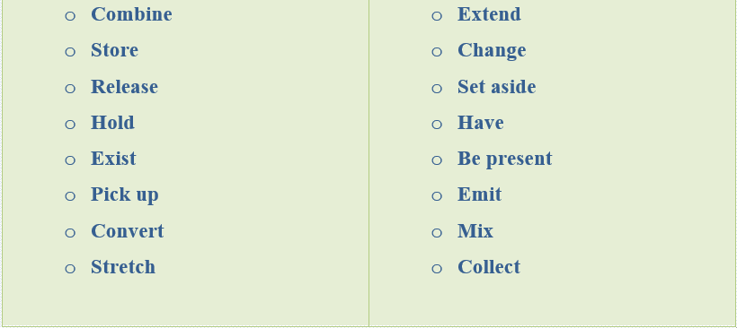
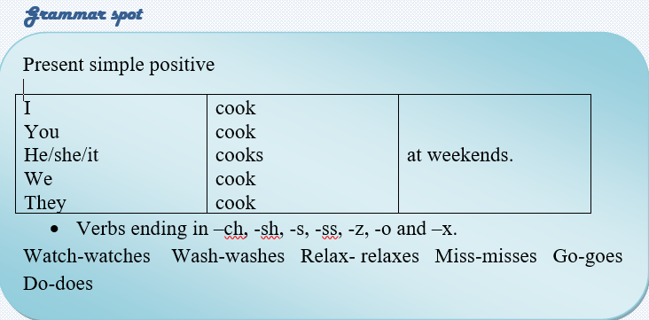
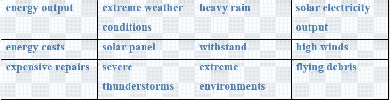

Many forms of energy exist, but they all fall into two basic categories: • Potential energy • Kinetic energy Potential energy is stored energy and the energy of position. There are some types of potential energy: Chemical energy is energy stored in the bonds of atoms and molecules. Batteries, biomass, petroleum, natural gas, and coal are examples of chemical energy. Chemical energy is converted to thermal energy when people burn wood in a fireplace or burn gasoline in a car's engine. Mechanical energy is energy stored in objects by tension. Compressed springs and stretched rubber bands are examples of stored mechanical energy. Nuclear energy is energy stored in the nucleus of an atom—the energy that holds the nucleus together. Large amounts of energy can be released when the nuclei are combined or split apart. Gravitational energy is energy stored in an object's height. The higher and heavier the object, the more gravitational energy is stored. When a person rides a bicycle down a steep hill and picks up speed, the gravitational energy is converting to motion energy. Hydropower is another example of gravitational energy, where gravity forces water down through a hydroelectric turbine to produce electricity. Task1. Vocabulary Match the verbs from the text with the same meaning.

Task2. Reading
Put the words or phrases in the gaps in the sentences.
Nuclei / thermal energy/ wood / tension / engine/ potential molecules /kinetic/ atoms /height
🔸There are two basic types of energy forms: ………. and ……………
🔸Chemical energy is stored in the bonds of………… and ……………
🔸Chemical energy is converted to ………………. when people burn ………in a fireplace or burn gasoline in a car's………….
🔸Mechanical energy is energy stored in objects by ………………….
🔸Large amounts of energy can be released when the…………. are combined or split apart.
🔸Gravitational energy is energy stored in an object's…………….
Task3. Reading
Read the text and answer the questions.
🔸What forms of energy do you know?
🔸What types of potential energy are there?
🔸What is the energy stored in the bonds of atoms and molecules called?
🔸Can you write examples for mechanical energy?
🔸What can happen if the nuclei are combined or split apart?
🔸What is important for more gravitational energy to be stored?

Task4. Listening
Listen to the conversations and answer the questions.
A: What’s Joseph’s last name1?
B: His last name is____________________
A: Sorry, what’s your name again?
B: OK, my first name is________________ and my last name is spelled__________________
A: Excuse me, what’s her name?
B: ______________, and her last name is spelled______________________
A: What is Ms. Smith’s first name?
B: It’s spelled________________________
A: Who is the man in the middle?
B: He is my friend, _______________________
A: Where is he from?
B: He is from_____________________________
Last name = family name = surname first name = given name
Task5 Writing
✅ Learn the given lexical units.
✅ Work in groups and explain the meanings of the given lexical units.
✅ Try to use them in sentences.

Read the case and give some solutions.
Solar panels are becoming increasingly popular as a way to save on energy costs, but there are a few common problems that can occur.
You are a homeowner with solar panels. However, you live in the area with extreme weather conditions like severe thunderstorms, heavy rain, or floods. Solar panels are designed to withstand a wide range of weather conditions and can generally perform well in extreme environments. However, in some cases, soiling, heavy rain, snow and some other weather conditions can affect solar electricity output.
Your solar panels have been damaged from high winds or flying debris. As a result, you are suffering from lower efficiency and energy output. Some steps should be taken to prevent even more expensive repairs that may possibly happen.
Suggest some ways to settle the problem and prevent further damages.
What is the problem?
How serious is this situation?
What is the cause of this problem?
How it is successfully solved?
How should it be solved?
What is the best way to clean solar panels?
Can you present some tips on how to clean solar panels?